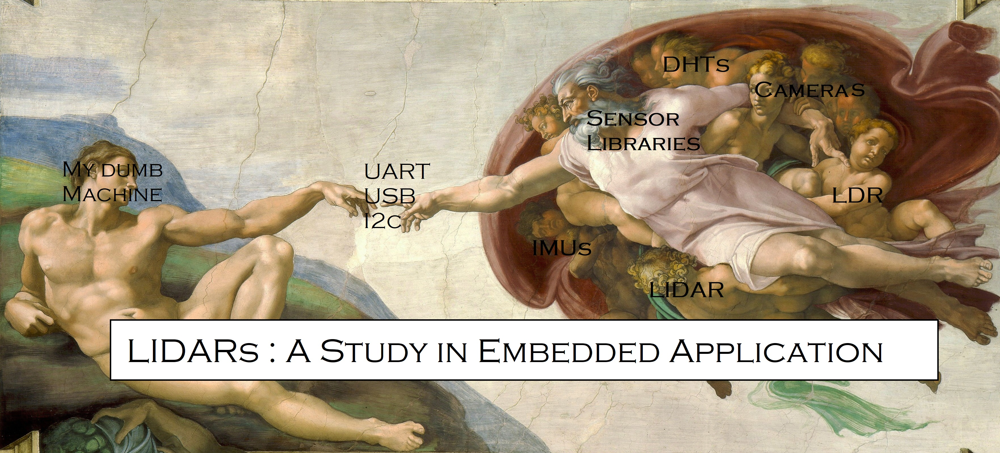
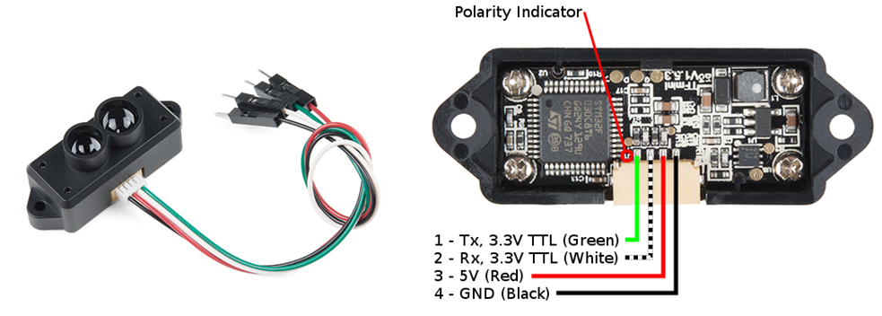
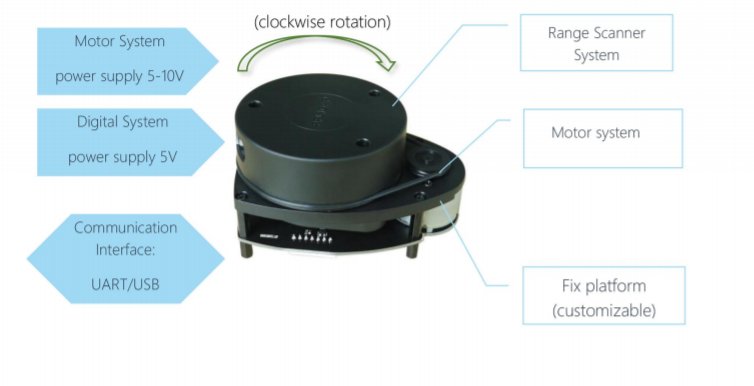
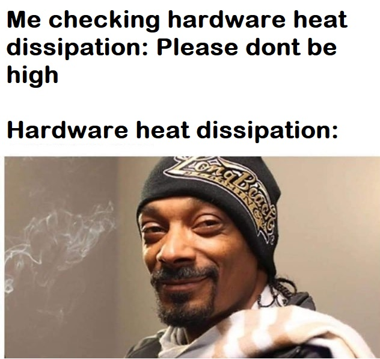
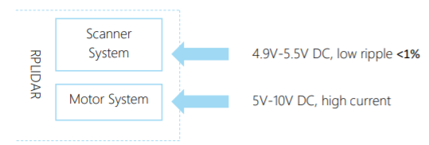
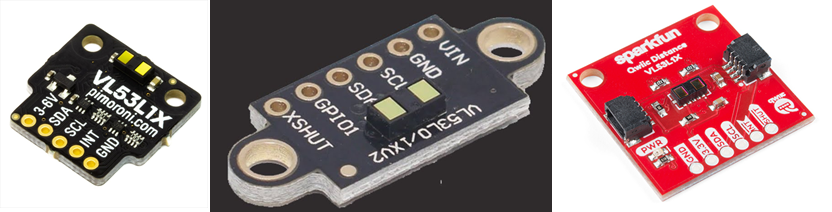
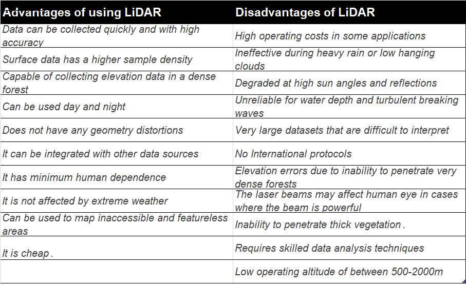

You have finally decided to build something. It could be an obstacle avoidance system for your RC vehicle or maybe even a complex task like mapping the inside of your house for creating a 2d map paired with Wi-Fi signal strength so you could pick the best place to place a router. Maybe you want to build a drone that is able to avoid hitting walls when your own piloting skills are trash. In problems like these there is one common objective; you want your machine to see!
There are many ways one can observe the surroundings. To actuate some change, like moving a motor, controlling lights or even triggering blocks of code, what we need is feedback, to know the best thing to do and also get some assurance that our actions are having the right effect. Observing the surroundings give us this feedback.
All observation essentials do the same thing; we throw some stuff around and look at what comes back. From space observatories to apache helicopters, from a minute microorganism to our own eyes. We all depend on physically measurable parameters like light, sound and temperature to understand the space around us.
When designing systems, it is important to decide how your system sees. Cameras offer one solution, giving us high resolution images but needing complex and heavy processing in the backend. Another simpler yet rudimentary approach is using sound waves like in sonar or the commercial ultrasonic sensors, which, like bats use sound as the physical parameter.
LIDARS are the third option. They fall somewhere between the earlier two. This class of sensing hardware depends on light much like a camera but the code complexity and compute power are relatively lesser than systems than rely on cameras.
They are systems that illuminate their surroundings with laser light ( ultraviolet, infrared or even visible) and measure the reflections with a sensor. They sense:

We take these measurements to make a 3D representation of the target environment. Usually the cost and requirement decide which optical parameter the designer decides to implement, but for hobbyist or low cost hardware we mostly look at TDOA i.e Time difference of arrival.

For most applications and projects we often depend on COTS i.e. Commercial off the shelf components. Right now there are two types of devices that allow us to prototype LIDARs based functionalities very quickly. There are LIDARS that are stationary and only look in one direction like the TF mini and VL53L1X series mentioned below. Then there are devices like the RPLIDAR that allows us to cover an angular plane of 360 degrees.

It is a stationary sensor which uses TOF( time of flight) and 850nm infrared light sources to measure distance. It is the cheapest LIDAR sensor that one can pick up. The sensor communicates over UART and has a decent operating temperature range(0-60 C) making it easier to interface with commercial of the shelf microcontrollers and development boards. The biggest limitation is the degree of freedom.
This sensor is static, It can only look in one direction. Which might be what you need, for exampling monitoring your house entrance or a room.One approach which we often see is people pairing it with a servo and you have got a basic LIDAR based system with some degree of freedom.

For applications where we wish to avoid stray wires, unaccounted power losses, noise etc. we often look for robust modules. Yes, one can put the static LIDARs on some motors to make them cover a larger area but then we have to deal with the problems like calibration, power supply and wiring management. Hardware development already being a task straight from hell, making custom modules for complex sensor becomes an act similar to asking for hells premium membership.
This module takes the stationary sensor and starts spinning it. With a considerable high sampling frequency (refer table below) it allows us to get a 360 degree LIDAR action using 775~795nm IR lasers with an angular resolution of around 1 degrees. The trade-off for this rotation come as additional hardware cost, power drainage, payload weight but also allows rigid supports and easy microcontroller interfacing.

When powering development board, sensors or ICs there are input voltage and current considerations that have to be taken care of and datasheets are often good sources for that. There are usually tables with acceptable ranges for parameters like voltage, current, temperature etc. Following these specs help us avoid problems like the system heating up, sensors malfunctioning, channel noise etc.

Looking at RP LIDARs, we see they have multiple sub systems with their own power requirements, yes they could have kept voltage regulators and converters on the module itself but it is something we have to work with

If we are talking about optical sensing hardware, we must also look at VL53L1X, which are laser ranging sensors that use time of flight to measure distance up to 4m. For applications that don’t require detection beyond a couple of meters, these sensors are a good choice all the while keeping the hardware cost, payload weight, size and power consumption much lower than the previous two.
Here we give a specification summary of the three COTS LIDAR sensors we discussed earlier. We ;ook at various electrical and physical parameters for each of them. We didn't include hardware costs as they tend to differ and varies from supplier to supplier.

Often our desire to use a hardware overpowers or logical reasoning and we end up buying stuff that is an overkill for our application. Because of its precise data collection and accuracy, LIDARs are one of the most preferred remote sensing technologies in the world today. While they comes with a lot of advantages, there are some limitations of LIDAR that make it quite difficult to use.
